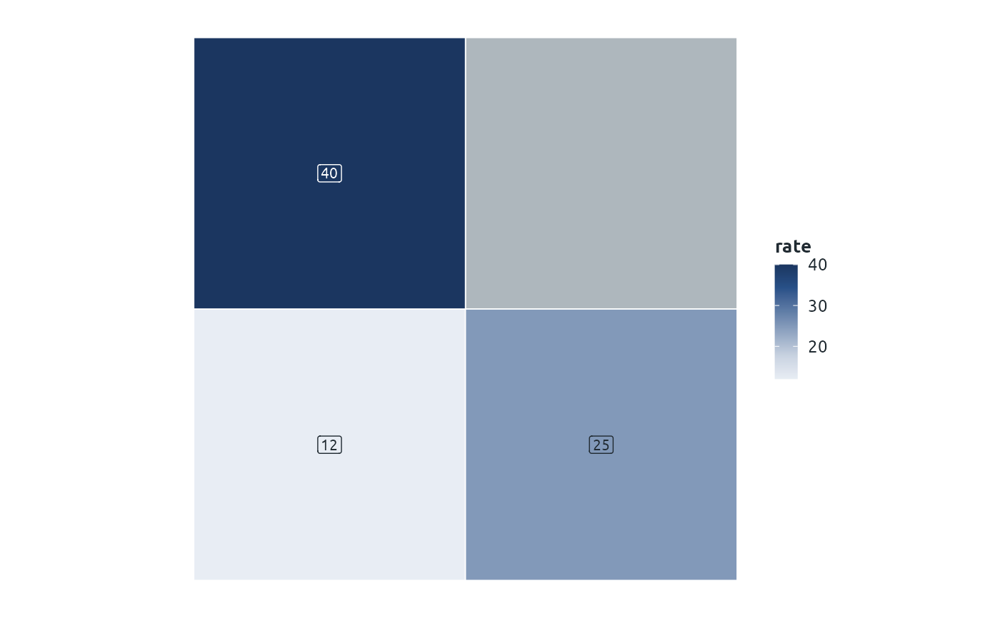

phw_map() joins your data to Welsh boundaries and draws a styled
choropleth, a ggplot for Word and PDF. It is the static counterpart of
phw_leaflet_polygons(). Areas with no data are drawn in the scale's
missing-value colour, and the boundary source becomes the caption.
Usage
phw_map(
data,
by,
fill,
level,
bins = NULL,
palette = NULL,
key = NULL,
label = NULL,
detail = "generalised",
...
)Arguments
- data
A data frame with one row per area (or per area and period, for use with
ggplot2::facet_wrap()).- by
Column of
dataholding the area codes, unquoted as in dplyr (a string works too). Codes are matched to the boundarycode.- fill
Column of
datato colour by. Numbers get a continuous or binned scale; text and factors get distinct colours.- level
A boundary level for
phw_boundaries()such as"local_authority", or an sf data frame withcodeandnamecolumns that you have already loaded.- bins
Breaks for numeric
fill, or a single number of bins.NULLgives a continuous scale. The legend also shows the lowest and highest values, rounded out to tidy numbers.- palette
Palette name or colours, as in
phw_pal(). Defaults to"blues"for numbers and the default palette for groups.- key
Name of a colour key, so groups keep their colours (see
phw_colour_key()).- label
Text to print on each area: a column of
data, unquoted, or an expression built from its columns such aspaste(name, rate). The columns ofdataand the boundarynameare available. With ggrepel installed, labels that would overlap on small areas are moved apart.- detail
Level of detail for
phw_boundaries().- ...
Passed to
ggplot2::geom_sf(), for examplecolourorlinewidthfor the outlines.
Value
A ggplot, styled with theme_phw_map(). $data is the joined sf
data frame, with the boundary name added when data has no name
column. The caption is the boundary attribution, which ggplot2::labs()
replaces.
Examples
if (requireNamespace("sf", quietly = TRUE)) {
square <- function(x, y) sf::st_polygon(list(rbind(c(x, y), c(x + 1, y), c(x + 1, y + 1),
c(x, y + 1), c(x, y))))
areas <- sf::st_sf(code = paste0("A", 1:4), name = paste("Area", 1:4),
geometry = sf::st_sfc(square(0, 0), square(1, 0), square(0, 1), square(1, 1)))
rates <- data.frame(area = paste0("A", 1:3), rate = c(12, 25, 40))
phw_map(rates, by = area, fill = rate, level = areas, label = rate)
}

# \donttest{
if (requireNamespace("sf", quietly = TRUE) && interactive()) {
la <- phw_boundaries("local_authority")
d <- data.frame(code = la$code, rate = runif(nrow(la), 10, 50))
phw_map(d, by = code, fill = rate, level = la, bins = c(20, 30, 40)) +
ggplot2::labs(fill = "Rate per 1,000")
}
# }